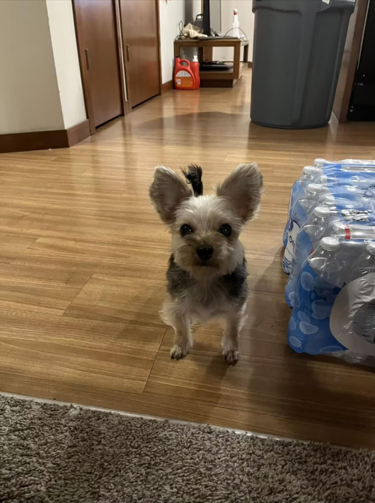

Who We Are
Dui Cao - I am a fourth-year college student majoring in Information Science. Passionate about basketball and CS2 (Counter-Strike 2), I enjoy challenging myself in games and improving my technical and tactical skills.
Apart from academics and gaming, my dog XiuXiu is an important part of my life.
He has been my best companion, bringing joy and relaxation. Looking ahead, I hope to apply information science to real-world applications while continuing to grow in sports and gaming.
Seung-min Yu - Technology has always fascinated me, especially mechanical keyboards. The satisfying click of each keypress, their durability, and customization make them feel like an extension of myself.
Whether gaming, coding, or working on projects, the precision and feedback of a mechanical keyboard enhance my experience. It’s not just a tool—it’s a passion that blends functionality and personality.

League of Legends is a strategic 5v5 MOBA where players control unique champions to outplay opponents and destroy the enemy Nexus. I love its deep strategy, high skill ceiling, teamwork, and thrilling moments.
The evolving meta, competitive ranked system, and intense esports scene keep me engaged and always striving to improve.
Our Journey
We are both seniors majoring in Information Science, driven by curiosity and a desire to explore the intersection of technology and real-world impact.
Throughout our academic journey, we have explored various aspects of technology, from data analytics and software development to the ethical implications of artificial intelligence. Our coursework has provided us with a strong foundation in coding, system design, and user experience, while also encouraging us to think critically about the societal consequences of technological advancements.
Beyond the classroom, we have engaged in research projects, internships, and collaborative initiatives that focus on inclusivity, accessibility, and digital ethics. These experiences have deepened our understanding of how technology shapes different communities and how we, as future professionals, can contribute to building a more equitable digital landscape.
Through this project, we aim to shed light on power dynamics in the tech industry and challenge implicit biases that influence opportunities and innovation. We hope this platform serves as a space for learning, reflection, and meaningful discussions on how to drive fairness and inclusivity in technology.
Our Projects
Check out our previous project: Watch here